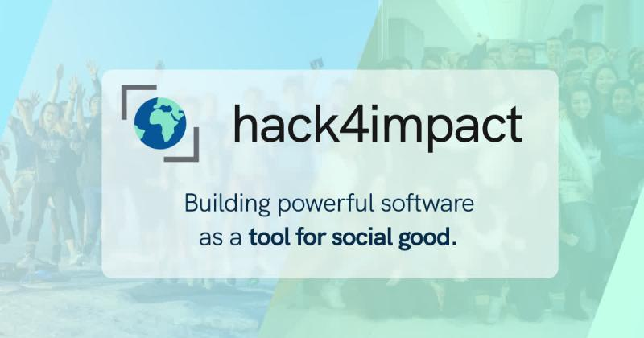

Hack4Impact

I am extremely excited to have been selected for the Hack4Impact
Bootcamp as a developer!
Developing this blog using Typescript is
part of my first Milestone!
What is Hack4Impact?
Hack4Impact is a student-run nonprofit group, that connects students
with other nonprofits, to create software that helps them do their
work more efficiently.
Hack4Impact's main initiative is to
provide nonprofits with software they otherwise would never be able to
have.
Working with nonprofits across the world, Hack4Impact
members build products to improve the functions of effective
nonprofits in their local communities.